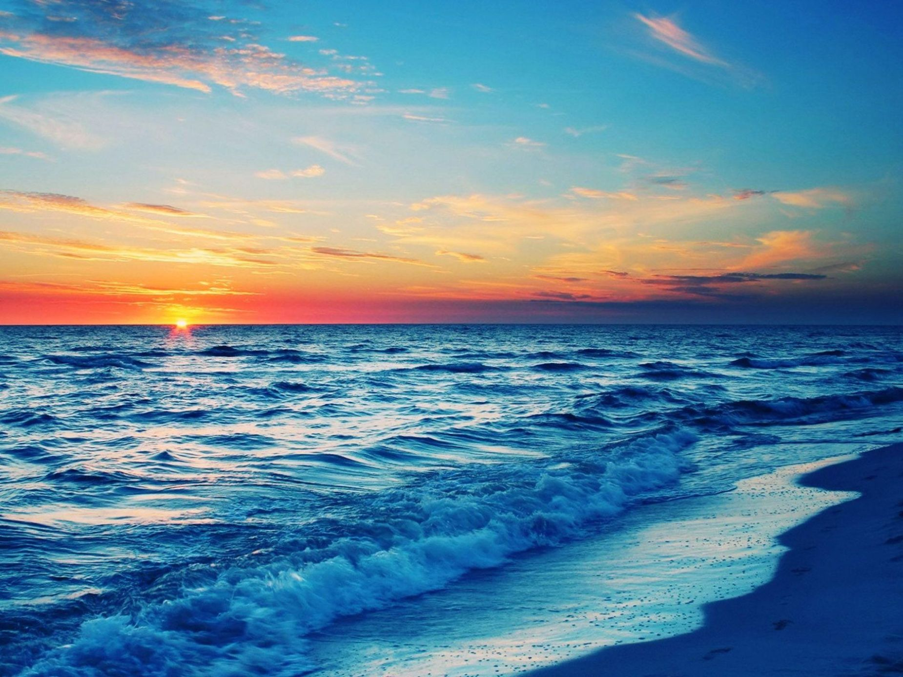
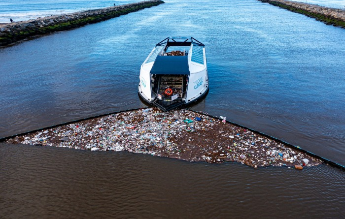
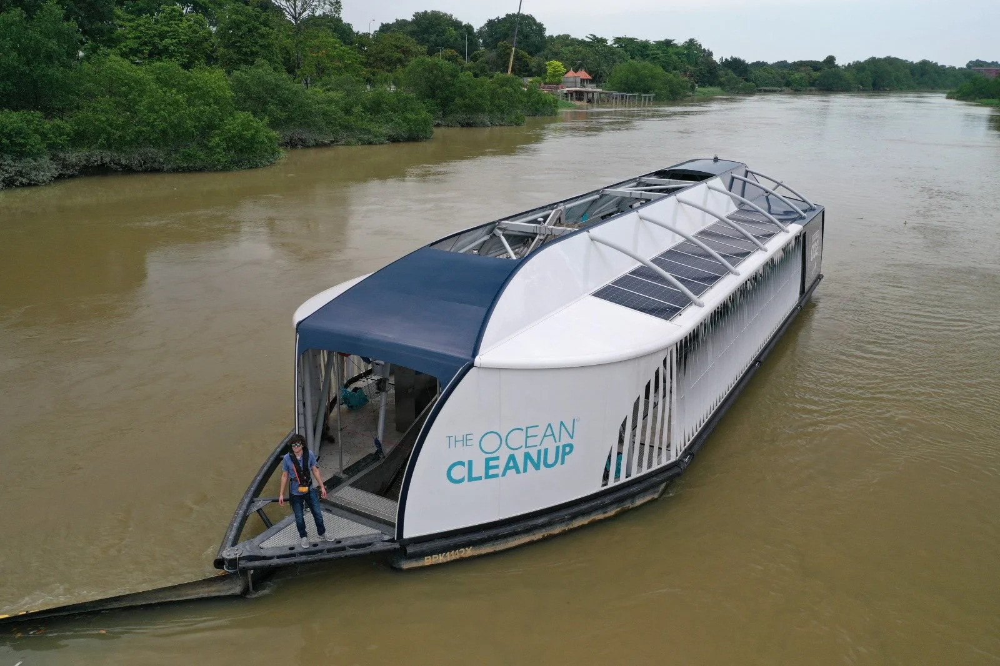

What We're All About

We are a collective of passionate individuals united by a single purpose — to restore the health and beauty of our oceans and protect the countless lives that depend on them. Our team is composed of environmental advocates, marine enthusiasts, and everyday people who share a deep respect for the natural world and a determination to make a lasting difference.

The Azure Sea Project began during a coastal cleanup that revealed the devastating toll of pollution. Amid plastic bottles, fishing nets, and debris, we found a young sea turtle lifeless in a web of plastic. That moment transformed our simple act of service into a mission — a reminder that pollution is not just an environmental issue, but a crisis of compassion and responsibility.

Motivated by that experience, we set out to create a lasting solution rather than a temporary cleanup. The Azure Sea Project was founded with the mission of reducing marine pollution through innovative technology and community-driven action. We believe that by combining modern machinery with the collective goodwill of people around the world, we can cleanse our oceans and prevent such tragedies from happening again.

Our efforts are focused on three main goals: removing existing waste from the sea, preventing further pollution through awareness and education, and supporting the wellbeing of marine life. Every project we undertake is guided by these principles, and every donation we receive brings us one step closer to a cleaner, safer, and more sustainable ocean.
The sea connects us all — and protecting it is not just our mission, but our moral duty. Together, we can make the blue of the ocean shine once more.